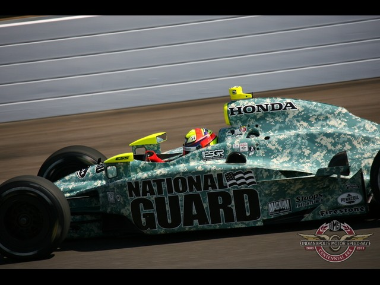
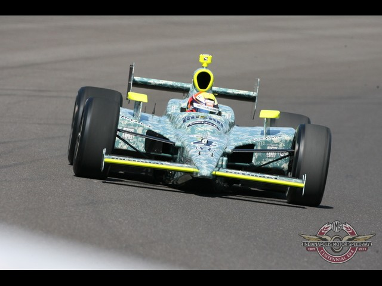
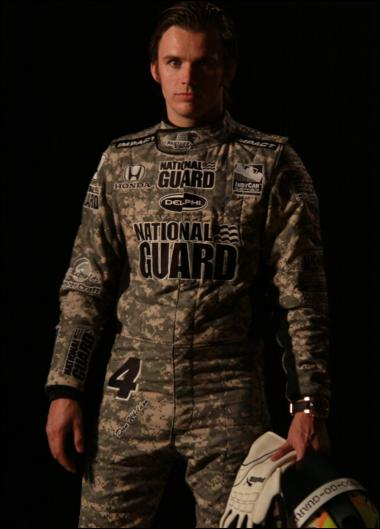
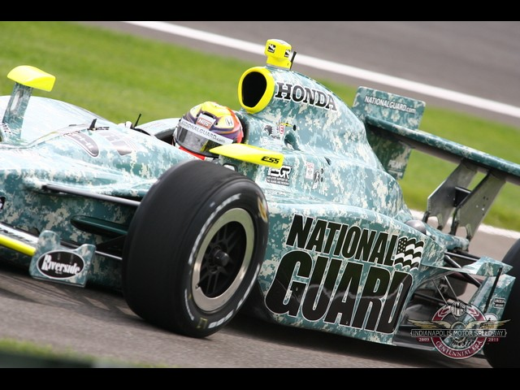
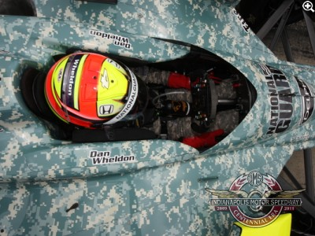
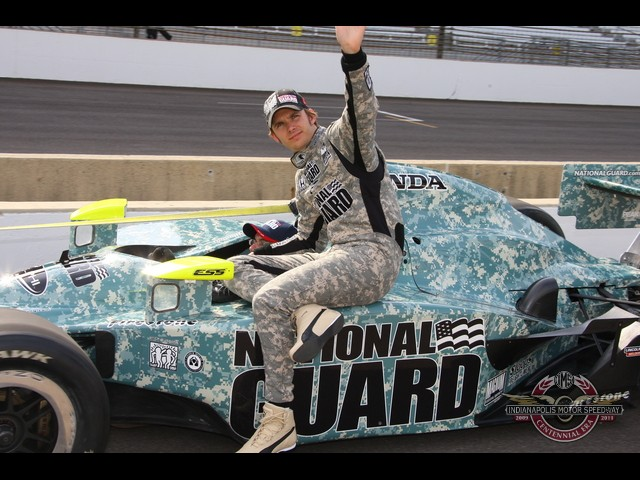
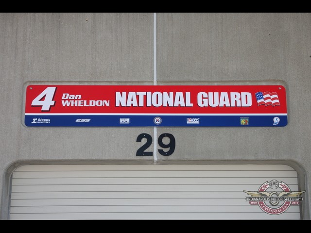
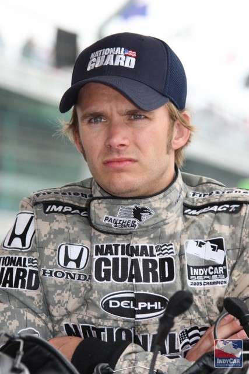
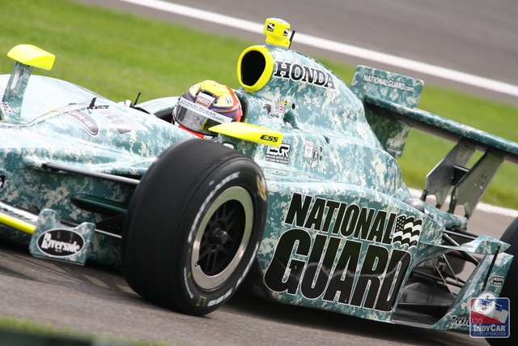

As Indy 500 progresses there will surely be better pictures, but this is exciting now to see, even tiny, National Guard Youth ChalleNGe Program logo on National Guard car. This is a successful awareness for NGYCP after Atlanta NASCAR race where car #24 carried NGYCP logos as well.

Though tiny, still quite noticeable, right under the re-fueling door.

The overall design of this car is spectacular in ACU digital pattern.
I am not even mentioning the design of the car — simple yet right on. Additionally, note ESGR logos on the car as well.
I will add more pics to this blog archive post as I find them throughout Indianapolis 500.
Archived comments
More photographs
— f1vlad




More photographs
— f1vlad
